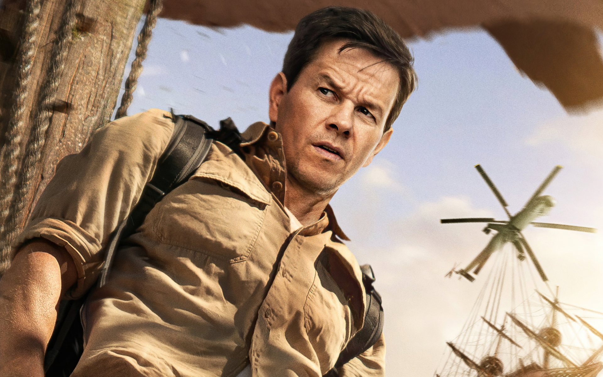
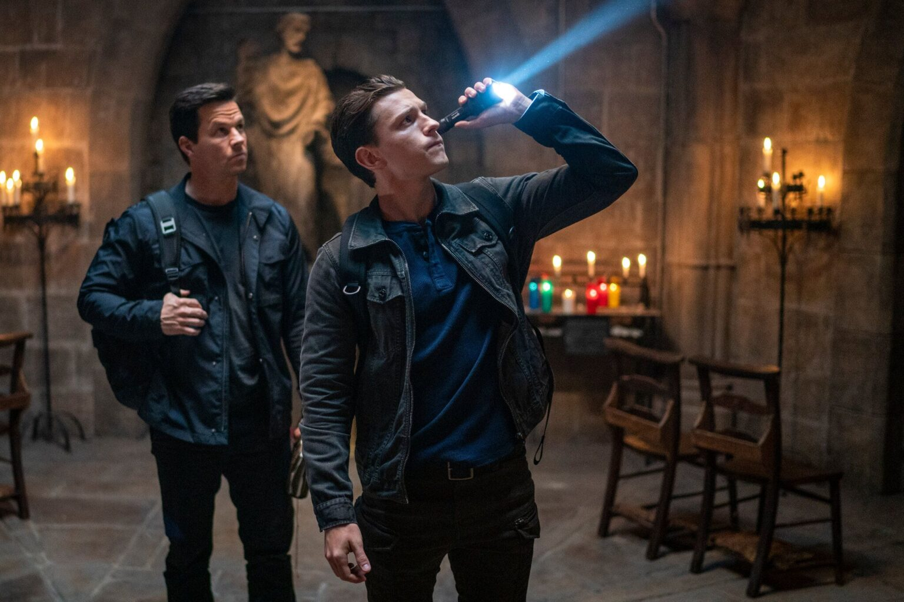
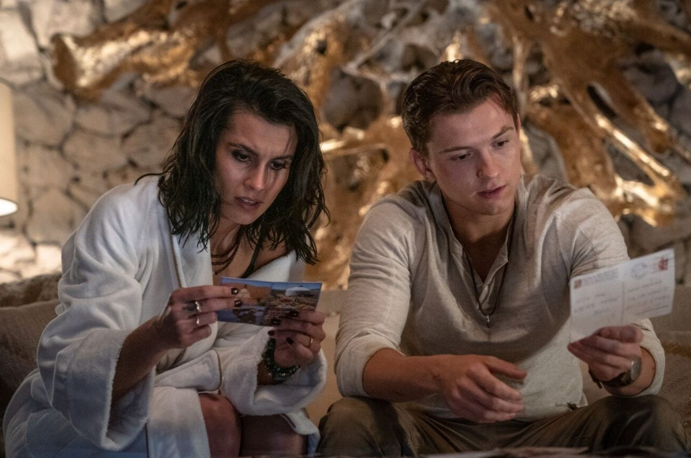
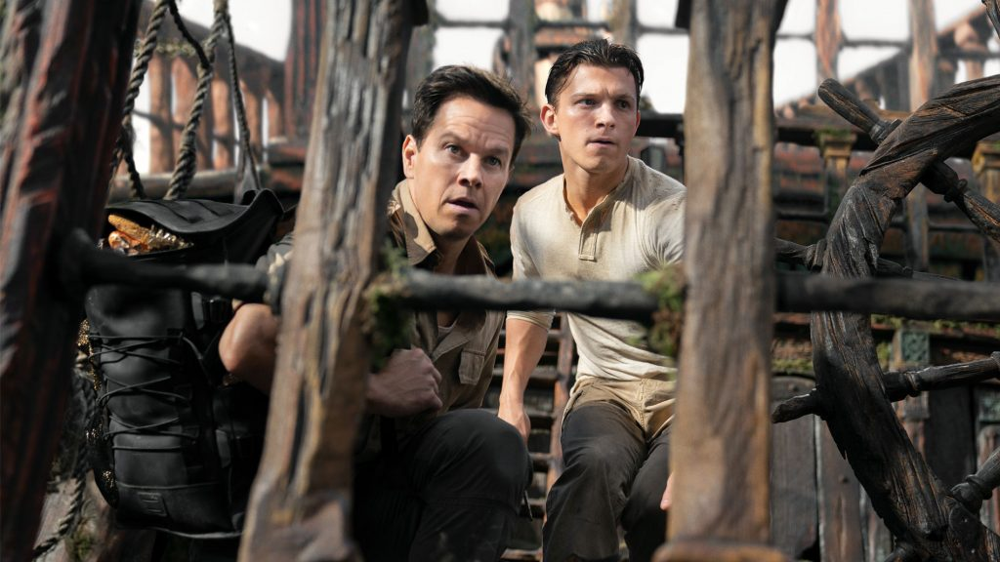
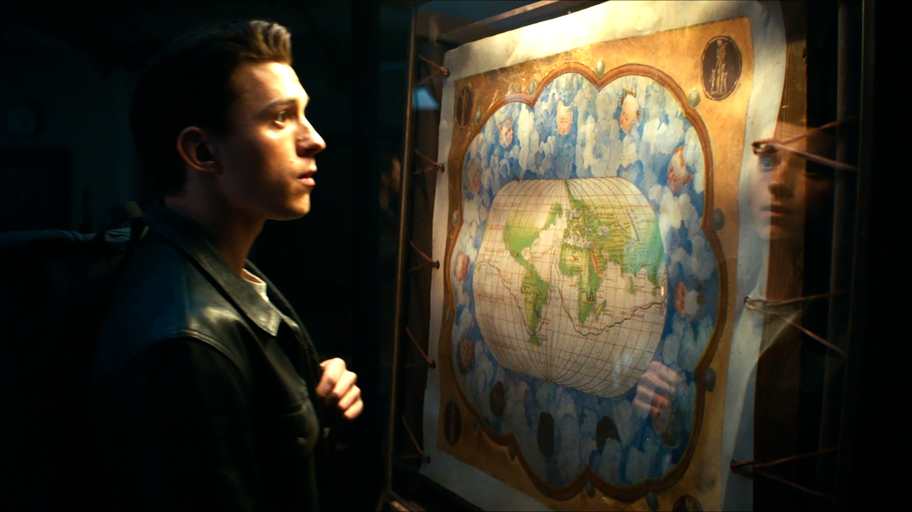

Uncharted: Fuera del Mapa
El inteligente y astuto cazador de tesoros Nathan Drake se embarca en su primera gran aventura alrededor del mundo junto a su mentor Victor "Sully" Sullivan para encontrar el legendario tesoro perdido de Magallanes.
★★★★★
Nathan Drake es un joven aficionado a la historia y las reliquias que trabaja como bartender en Nueva York. Su vida cambia rotundamente al ser contactado por Victor "Sully" Sullivan, un cazador de fortunas que le propone una misión arriesgada: encontrar la mítica fortuna de 5.000 millones de dólares acumulada por Fernando de Magallanes y perdida hace más de 500 años.
Lo que comienza como un golpe rápido pronto se transforma en una vertiginosa carrera global para adelantarse al despiadado Santiago Moncada y a sus mercenarios, mientras desentierran acertijos antiguos que los llevarán desde subastas clandestinas hasta barcos piratas en islas remotas.
Personajes Principal / Actores

Tom Holland
Nathan Drake
Interpreta a un joven e ingenioso cazador de tesoros que busca resolver uno de los misterios más grandes de la historia mientras intenta encontrar pistas sobre la desaparición de su hermano.

Mark Wahlberg
Victor "Sully" Sullivan
Interpreta a un cazador de tesoros veterano, estratega y oportunista que se convierte en mentor de Nathan en esta peligrosa carrera contra el tiempo.
Galería de imágenes




Tráilers y Clips
¿Por qué deberías verla?
Descubre los motivos que la convierten en una excelente opción para los fanáticos de las películas de acción y tesoros perdidos: